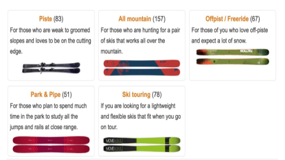
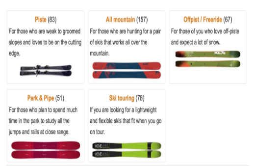
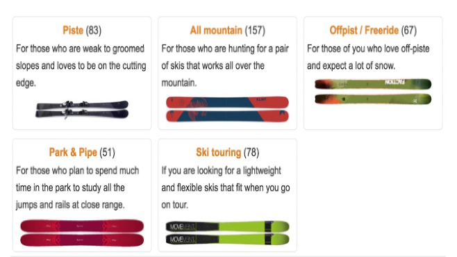
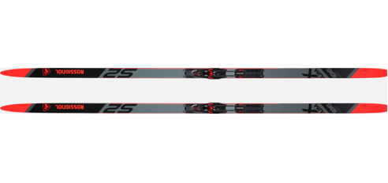

What type of skiing do you like?
All-Mountain Ski
Description: All-mountain skis are designed to handle any terrain, from groomed runs to light powder. They offer a balanced mix of stability, control, and versatility, making them a great choice for skiers who like to explore the whole mountain.
Freestyle Ski
Description: Freestyle skis are built for riders who love jumps, tricks, and terrain parks. They’re lightweight, flexible, and usually twin-tipped so you can ski both forward and backward with ease.
Freeride Ski
Description: Freeride skis are made for adventurous skiers who love tackling off-trail terrain and deep powder. They’re wider, stiffer, and built to handle variable snow conditions and steep, challenging lines.
Racing Ski
Description: Race skis are built for speed, precision, and powerful turns on groomed slopes. They have a stiff flex and narrow waist, giving advanced skiers maximum edge control and responsiveness at high speeds.